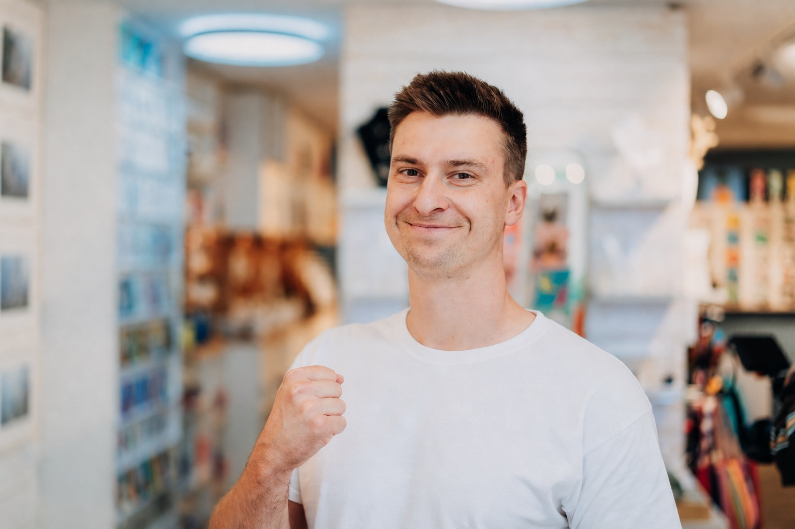

Roman Hrušák · #strojirenstvivlodickach · MSV 2026
Video, které někdo
opravdu dokouká.
Přednáška skončila. Váš projekt může začít.
Přeji vám, ať je příprava videa příjemný zážitek a výsledek předčí vaše očekávání. Budu rád, když vám k tomu tento web pomůže.

„Rozhodnutí, která neuděláte na začátku, se nejbolestivěji projeví na konci.“
Jeden univerzální návod na video, které vždy dodívá každý, bohužel nemám.
Ze zkušenosti ale vím, co funguje a kudy jít úspěchu naproti.
Berte tenhle průvodce jako pomoc při vlastním rozhodování.
Ať se daří!
Nejdřív lidé. Kdo má poslední slovo?
Než začnete něco vymýšlet, zjistěte, čí očekávání potřebujete znát a kdo výsledek opravdu schválí.
Golden tip
Má se to líbit šéfovi, anebo cílové skupině?
Zjistěte včas, jestli finální schvalovatel vyslechne argumenty, proč video tvoříte právě takhle pro cílovku, nebo jestli bez jeho osobního „líbí se mi“ neprojde. Ať víte, podle čeho se bude rozhodovat.
Domluvte si, čí připomínky se počítají
Hned na začátku určete jednoho, maximálně dva lidi, kteří budou video připomínkovat a schvalovat, včetně člověka s posledním slovem. Názor má každý, ale nemusíte se řídit každým. S ostatními video nekonzultujte: ušetříte si protichůdné připomínky, nejistotu i čas.
Produkci pak za každé kolo korektur předejte jeden společný, odsouhlasený seznam připomínek. Předem si domluvte počet kol i to, co do nich patří. Projekt tak posunete efektivně dál a omezíte změny už schváleného směru, které mohou znamenat vícepráce.
U připomínky „ještě tam dejme…“ pomůže otázka: Co tím divákovi vysvětlíme? A co případně zkrátíme, aby se neztratilo hlavní sdělení? Osobní vkus je přirozený, sám ale neřekne, jestli video funguje.
Teď si společně řekněte, co má video udělat
Nemusíte mít hotový scénář. Potřebujete se shodnout na účelu. Obchodní video, nábor a produktová ukázka nemusí fungovat stejně.
Kdo se má dívat? Co řeší a co už o vás ví? „Naši zákazníci“ bývá příliš široká odpověď.
Vyberte jedno hlavní sdělení. Další informace mohou pomoct, ale nemohou mít všechny stejnou prioritu.
Na schůzce ho uvede obchodník. Na sociálních sítích musí získat pozornost samo. Na veletrhu může být potřeba, aby dávalo smysl i bez zvuku.
Má divák otevřít detail řešení, ozvat se, nebo lépe pochopit nabídku při schůzce? Podle toho vybírejte obsah i další krok.
Relevantní reakce, návštěvy konkrétní stránky nebo pomoc obchodníkům. Domluvte si dosažitelné očekávání, které odpovídá účelu videa.
Všechno nemůže být hlavní. Jedno video samo nezařídí milionové obraty, neudělá obchod za obchodníky a nenajme stovku zaměstnanců. Může ale být velmi užitečnou součástí vaší komunikace.
Kvalitních tvůrců je dost. Co za tu cenu dostanete?
Vyberte několik produkcí, jejichž práce se vám líbí. Pošlete jim stejné zadání a porovnejte, co navrhují, co převezmou a co zůstane na vás.
Potřebujete provedení, nebo i pomoc se zadáním?
Když přesně víte, co chcete, může stačit kvalitní realizace. Když si nejste jisté, hledejte partnera, který se ptá, naslouchá a pomůže najít obsah i způsob vyprávění.
Pěkné portfolio je dobrý začátek. Stejně důležité je, jak s vámi produkce komunikuje a jestli rozumí tomu, pro koho video vzniká.
O ceně se dá mluvit
U dražší i levnější nabídky se ptejte, co v ní přesně je. Drahá nabídka může obsahovat užitečnou práci navíc, ale také řešit víc, než potřebujete.
Dobrá otázka: „Jak by vypadala jednodušší varianta a o co bychom přišli?“ Teprve pak můžete rozhodnout, která nabídka pro vás má největší hodnotu.
Jakmile má jasné zadání, může převzít domluvenou přípravu a realizaci. Nemusíte samy vyřešit každý detail natáčení. Produkce má odpovědnost proměnit zadání v zajímavé video, i když dokoukání každým divákem nikdo slíbit nemůže.
Vzor poptávky pro modelovou kalkulaci
Tuhle jednoduchou poptávku můžete zkopírovat a poslat vybraným produkcím.
Podle potřeby si větu upravte.
Začátek může fungovat jako trailer
Divák má co nejdřív poznat, že video je pro něj. Úvodní animace loga může pozornost ztratit dřív, než vůbec ukážete něco zajímavého.
Ukažte, na co se může těšit
U technologického videa může krátký prostřih ukázat stroj při práci, ovládání i hotový výstup. Technolog hned ví, co ve videu najde.
U případovky může jako první zaznít silná věta z rozhovoru. Něco, co jde přímo k problému diváka. A teprve potom necháte příběh plynout.
Co divák potřebuje? Čemu ještě nevěří? Co mu brání udělat další krok? Potřeby, pochyby, překážky. Marketingová klasika, ale funguje.
Na schůzce ho uvedete. Ve feedu se uvádí samo.
Při schůzce můžete vysvětlit, proč video pouštíte a na co se mají lidé dívat. Na sítích to musí zvládnout samo. Tady je potřeba odvaha a první vteřiny, které si získají pozornost.
Podle místa použití promyslete začátek, délku, formát i čitelnost titulků. Pozornost potřebujete udržet všude, jen pokaždé začínáte v jiné situaci.
Golden tip
To nejlepší často zazní ještě před natáčením.
Má ve videu někdo mluvit? Udělejte s ním rozhovor předem, bez kamer a štábu. Nervozita pak tolik nesvazuje, snáz najdete zajímavé příběhy a na natáčení přijde připravenější.
Suverén mimo kameru nemusí být nejlepší před ní. Z mojí zkušenosti často nejlépe mluví lidé, kteří jsou pokorní a přirození. Ti, kterých je jinak plná místnost, mohou po zapnutí kamery znejistět. Dejte šanci i tišším kolegům.
Vytěžte natáčení na maximum
Jeden den natáčení může dát materiál pro hlavní video i kratší upoutávky na jednotlivá témata. Musíte s nimi ale počítat už při přípravě.
Hlavní video
Vypráví širší příběh, třeba na konkrétní landing page. Pořád má jeden hlavní účel. Nemusíte do něj dostat úplně všechno.
Kratší upoutávky
Jdou rovnou k jednomu tématu a mohou přivádět různé lidi k hlavnímu videu z různých míst. Každá má dávat smysl sama o sobě. Nestačí náhodně vystřihnout třicet sekund.
Je to zamýšlená cesta diváka, která může dobře fungovat.
Domluvte, kdo kterou verzi zveřejní, kam ji dá a jak ji využijí třeba obchodníci. Dobře použité video může hodně pomoct. Video, které zůstane ležet ve složce, jsou vyhozené peníze.
Hodnotíme výsledek
Úspěch nemusí znamenat milion zhlédnutí. Důležité je, jestli video pomáhá s tím, kvůli čemu vzniklo.
Golden tip
Nastavte si hned na začátku realistické cíle
Video samo o sobě není všemocné. Nemusí rovnou přinést nové zakázky, aby mělo smysl. Vyberte si cíl, který odpovídá jeho účelu, a domluvte si, kdy a podle čeho poznáte, že pomohlo.
- Pomáhá obchodníkům na schůzkách. Po měsíci používání vám řeknou, co se jim díky videu lépe vysvětluje a jak na něj zákazníci reagují.
- Usnadňuje pochopení produktu. Několik lidí z cílové skupiny po zhlédnutí dokáže vlastními slovy říct, k čemu jim řešení bude.
- Přivádí zájemce k dalším informacím. U krátkých upoutávek sledujete, kolik lidí přes odkaz přejde na celou případovou studii nebo detail produktu.
Když víte, čeho chcete dosáhnout, a cíl je splnitelný, lépe se vám rozhoduje o obsahu i připomínkách. Celá tvorba pak může být příjemnější, protože víte, k čemu společně směřujete.
A hlavně, ať vás to baví.
Užijte si tvorbu a udělejte video, za kterým si můžete stát. Když výsledku věříte a máte z něj radost, je to znát i na tom, jak ho představujete ostatním. Vaše energie může nadchnout kolegy a pomoct tomu, aby video používali a posílali dál.
Než se posunete dál, odškrtněte si to
Projděte si kroky při přípravě i před předáním videa. Pokud se vás některý bod netýká, berte zaškrtnutí jako „prověřeno, pro tento projekt nepotřebujeme“.
Zaškrtnutí, název projektu a rozepsaná poptávka se ukládají jen v tomto prohlížeči. Nikam se neodesílají. Na jiném zařízení se neobjeví; pro přenos si stáhněte TXT.